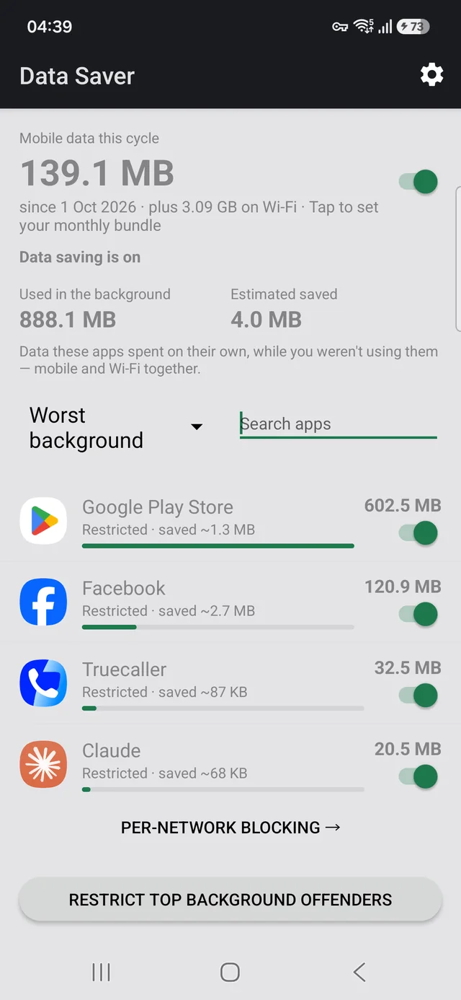

Not the one you use most — the one that spends most. And almost all of it is invisible.
Open the per-app data list on an Android phone and there is a good chance Google Play Store sits at or near the top, above the video app, above the social app, above anything you would have guessed. It is one of the most common surprises in that screen, and the reason is dull: it is downloading app updates, and nobody told it to wait for Wi-Fi.

That is the whole fix, and on a metered plan it is frequently the single largest saving available to you. Updates still install, they just wait for a connection that does not cost you anything.
Do not choose "Don't auto-update apps". It is on the same menu and it looks like the thorough version of the same idea. It isn't. Apps then stay on old versions indefinitely, including security fixes, until you remember to update by hand — and nobody remembers.
"Over Wi-Fi only" is the setting you want. It costs you nothing and keeps you patched.
App updates are full package downloads, not diffs of what changed, and a modern app is tens to hundreds of megabytes. Thirty or forty installed apps updating on a normal cadence adds up to gigabytes a month without a single deliberate action on your part.
It is also genuinely invisible. There is no notification when an update downloads, nothing in your notification shade, and the data is spent while the phone is in your pocket. The only place it shows up is the per-app data screen, which almost nobody opens. Here is where to find it.
Once you look at that list, the Play Store is usually not alone. The pattern repeats:
Each of these has its own switch in its own place, which is the real problem: there is no single screen that shows you who is spending and lets you stop it. Android's own controls get you most of the way, one app at a time.
Data Saver exists for the step before all of this: knowing which apps are actually worth your attention. It ranks every app by what it spent this cycle with the foreground and background split on the same row, and lets you block an app on mobile data while leaving it working on Wi-Fi — something Android has no setting for.
For the Play Store specifically, the setting above is better than blocking it. Blocking a store app stops it updating anything; setting it to Wi-Fi only keeps you patched for free. Use the app to find the offenders, then use each app's own setting where it has a good one.
It has no INTERNET permission. The permission is absent
from the manifest, so Android will not let it open a network connection at all. No
accounts, no analytics, no servers, no ads. The figures come from counters Android already
keeps on your device, and the source is public.
Free, no ads, works offline. Requires Android 7.0 or later.